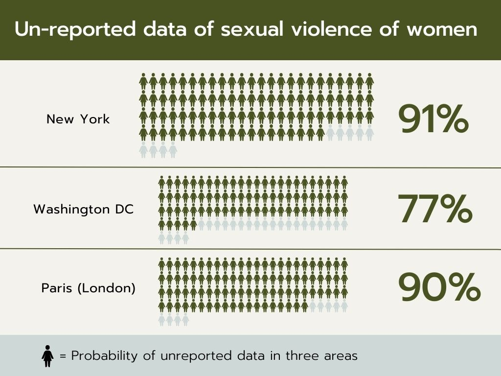

In the present days, especially at night, women are being targeted as the victim of being treated violently by men. The more stunning fact is that, several harrassments and assults are collected to the database but not reported to the public. As a result, this phenomenon increases women's risks of experiencing danger on roads.
On the right hand side is a pictograph indicating the locations where cities "violence to women" is disclosed to only data-scientists. Looking into the data, New York city have found out that about 91% 1 of people are not being reported to the public, that suffer from unwanted sexual behaviours. This value shouldn't be overlooked as only a small sector from the whole data base. Contrary, it is the indispensable tool that determines the underrepresentation of women's data.
In the previous section we have explored how danger experienced by women are being unreported in specific cities. Now, if we employ those data and compare with men, the difference is stark. As you see beneath, there is the outline of a bar graph. As a matter of fact, the tall blue bars shown are sectors to the risks that is faced by women! Both women and men have the highest fear on walking in multistorey car parks. And yet, the probability of women scared of crime is exactly 2 times more than men: 31% TO 62%! The finding pinpoints particularly low-income women, mainly because they normally work for odd hours, so they are more likely to finish in the dark.
2Earlier, the 90% of unreported danger data for women in London is on public transports, but analysing this bar-chart, both women and men's fear of waiting at a bus stop is the lowest in contrast to the others. The values are all under the 90% of unreported data, this means that there must be more unreported data flowing in collection of statistics.
{kind=link}